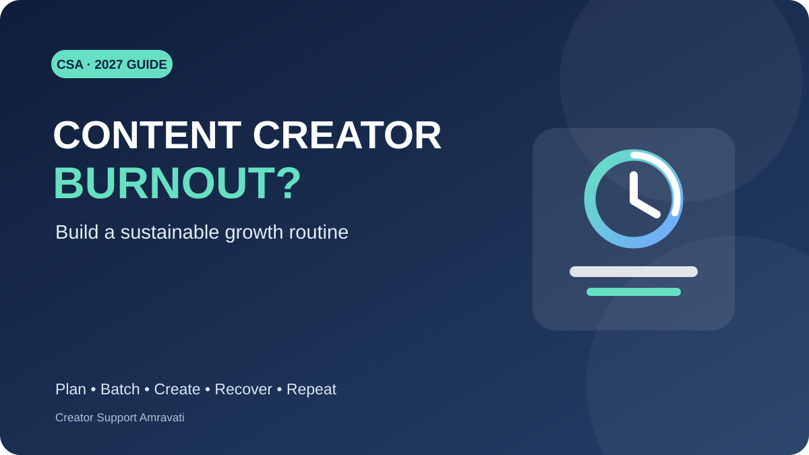
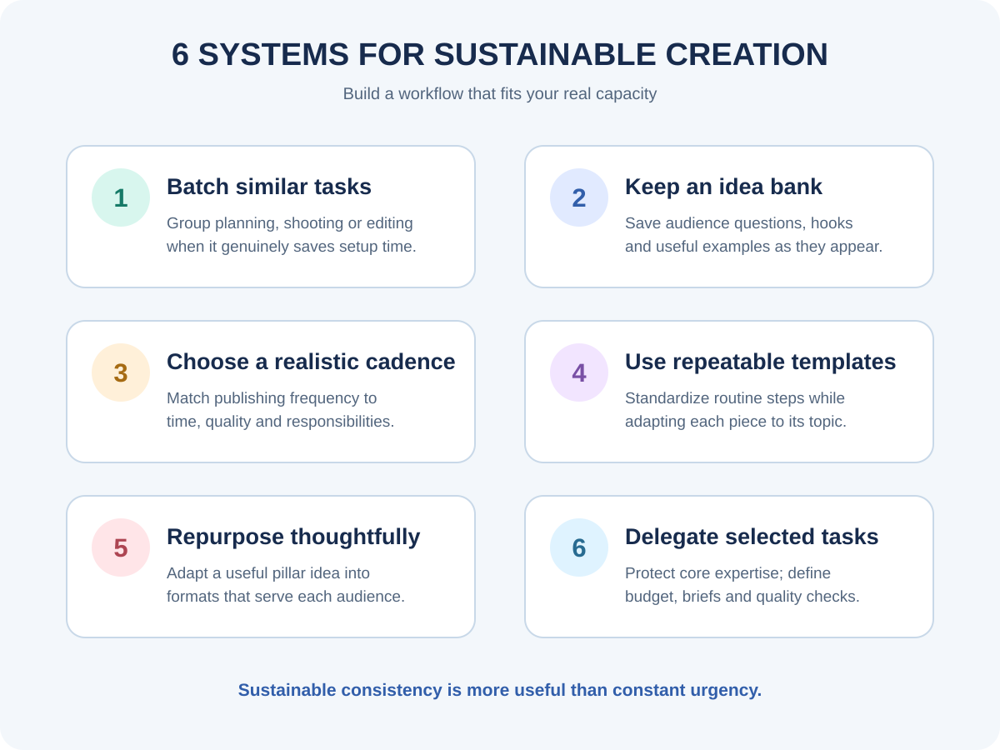

Content Creator Burnout Se Kaise Bachein? Sustainable Growth Routine (2027 Guide)
Content creation shuru karte waqt ideas aur energy dono high ho sakte hain. Lekin research, scripting, shooting, editing, thumbnails, SEO aur client work ko bina planning ke har din manage karna exhausting ho sakta hai. Sustainable growth ka matlab roz publish karna nahi; iska matlab aisa repeatable system banana hai jo aapki quality, time aur personal responsibilities ke saath fit ho.

- Creator burnout aur unsustainable workload ke possible warning signs
- Batching, idea bank aur realistic publishing cadence ke practical systems
- Hustle / panic posting aur sustainable routine ka comparison
- Workload heavy lagne par simple reset steps aur FAQs
Creator Burnout Kya Hota Hai — Aur Workflow Kyun Matter Karta Hai?
“Creator burnout” aam taur par us situation ko describe karne ke liye use hota hai jahan content work ka pressure, constant deadlines aur insufficient recovery ke saath motivation, focus ya creative energy par asar padne lagta hai. Yeh article clinical diagnosis nahi hai. Thakan ke kai possible reasons ho sakte hain; agar distress persistent ho ya daily life affect ho, toh trusted health professional se baat karna sensible hai.
Ek solo creator kabhi researcher, writer, presenter, camera operator, editor, designer, publisher aur community manager sab kuch hota hai. Jab har task urgent ban jaye, toh planning ke liye time nahi bachta aur har upload last-minute project ban sakta hai. Isliye sustainable system ka pehla goal output badhana nahi, unnecessary friction aur avoidable pressure kam karna hai.
1. Creator Workflow Ke 5 Warning Signs
Yeh signals har person mein same nahi hote, lekin inmein se kai cheezein baar-baar ho rahi hon toh apne workload aur routine ko review karein:
- Content banana lagatar bojh lagna: Pehle pasand aane wale topics par bhi planning ya recording shuru karna unusually difficult lagta hai.
- Analytics ka constant pressure: Baar-baar views refresh karna aur ek post ke result se poori strategy ko judge karna.
- Quality checks skip hona: Rushed hooks, incomplete captions, audio issues ya bina final playback ke publish karna.
- Last-minute panic: Publish se thodi der pehle topic, script, shoot aur edit sab ek saath karna.
- Personal ya core work ka compromise: Sleep, family time, study, teaching ya business operations regularly push hote rehna.
Ek isolated busy week ka matlab burnout nahi hota. Pattern, duration aur aap par padne wala impact dekhna zyada useful hai.
2. Burnout Risk Kam Karne Ke 6 Practical Systems
1. Daily Panic Ke Bajay Batching Apnayein
Har din camera, lights, files aur editing project dobara set karna context switching badha sakta hai. Agar aapke content format mein fit ho, toh similar tasks ko ek block mein group karein.
- Ek planning block mein topics aur outlines ready karein.
- Ek shoot session mein related videos ya Reels record karein.
- Editing, captions aur scheduling ke liye alag focused blocks rakhein.
Start small: Pehle sirf do short videos ka batch test karein. 3–4 videos shoot karna har creator ke liye practical ya necessary nahi hota.
2. Idea & Hook Bank Hamesha Ready Rakhein
Khali screen par topic sochne ke bajay ek simple idea bank maintain karein. Student ke repeated doubts, client questions, audience comments, search queries aur apne project learnings ko note karein.
- Har idea ke saath audience problem aur one-line takeaway likhein.
- Useful hook ya example ko source/link ke saath save karein.
- Ideas ko “Next”, “Research”, “Ready to record” jaise simple status dein.
3. Realistic Publishing Cadence Set Karein
Daily posting ko universal rule na samjhein. Aisa publishing schedule choose karein jo aapki available hours, content complexity, team size aur personal responsibilities ke saath match kare.
Example ke liye, ek creator hafte mein ek useful long video aur kuch short clips publish kar sakta hai; doosra fortnightly detailed video choose kar sakta hai. Dono schedules valid ho sakte hain agar quality aur audience expectation maintain ho. Pehle 4 hafton ka pilot schedule banayein, phir actual workload dekhkar adjust karein.
4. Templates Aur Repeatable Workflows Banayein
Thumbnail layout, video description, intro/outro, caption style, folder structure aur blog outline ke reusable templates banayein. Template ko starting point rakhein—har topic ko same treatment dena zaroori nahi.
Ek short checklist bhi rakhein: brief, script, shoot, edit, audio check, captions, thumbnail, metadata, final playback aur publish. Isse small but important steps miss hone ki possibility kam ho sakti hai.
5. Repurposing Se Ek Shoot Ka Behtar Use Karein
Har platform ke liye alag shoot karne ke bajay ek useful pillar video se relevant short clips, blog summary, carousel ya newsletter points develop karein. Lekin har format ko platform aur audience ke hisaab se edit karein; sirf same file har jagah upload karna meaningful repurposing nahi hai.
Repurposing ka purpose har din zyada posts banana nahi, ek achhe idea ko alag audience needs ke liye accessible banana hai. Iske liye hamari content repurposing guide bhi dekhein.
6. Core Strength Par Focus Karein, Selected Tasks Delegate Karein
Agar aap teacher, doctor, coach ya business owner hain, toh aapki expertise aur audience ke saath direct communication high-value work ho sakta hai. Editing, thumbnail design, formatting ya routine website updates mein se kuch tasks documented process ke saath delegate kiye ja sakte hain.
Delegation tabhi useful hai jab budget, quality control, turnaround time aur privacy requirements clear hon. Pehle ek repeatable task outsource karke review karein; zaroori nahi ki poora production workflow ek saath hand over karein.

3. Hustle / Panic Mode vs. Sustainable Growth Routine
| Routine Aspect | Hustle / Panic Posting | Sustainable Growth Routine |
|---|---|---|
| Planning | Publish wale din topic aur script decide karna | Idea bank aur manageable advance planning |
| Shooting | Har post ke liye setup dobara karna | Similar tasks ko suitable batch mein group karna |
| Production | Sab kuch akele aur last-minute karna | Templates, clear checklist aur selective support |
| Schedule | Energy ya capacity se zyada commitments | Available time ke hisaab se realistic cadence |
| Long-term approach | Recovery aur review ke liye kam space | Regular review, flexibility aur recovery time |
4. Workload Heavy Lage Toh 3 Reset Steps
- Short pause aur priorities review karein: Agar possible ho toh non-urgent publishing ya analytics checking ko temporarily reduce karein. Har creator ke liye fixed 48-hour break rule nahi hota; apni situation aur commitments ke hisaab se rest plan karein.
- Agla schedule simplify karein: Complex edits ya multiple formats ke bajay ek clear, useful format choose karein. Deadlines renegotiate karna possible ho toh pehle communicate karein.
- Sabse bada bottleneck identify karein: Note karein ki research, scripting, shooting, editing, approvals ya publishing mein se kaunsa step sabse zyada time le raha hai. Pehle usi process ko simplify, template ya delegate karein.
5. Ek Simple Weekly Routine Ka Example
Yeh sirf sample structure hai—isko apne workload ke hisaab se change karein. Har din content task rakhna zaroori nahi.
- Planning block: Audience questions review karein, 2–3 ideas select karein aur outlines likhein.
- Production block: Selected topics record karein; setup ko repeat use karein.
- Editing block: Rough cuts, audio aur captions complete karein.
- Publishing block: Thumbnail, title, description aur final playback check karein.
- Review block: Analytics ko fixed time par dekhein; ek learning note karein aur agle week ka schedule adjust karein.
- Recovery space: Calendar mein non-production time bhi rakhein. Buffer ko empty slot nahi, plan ka hissa samjhein.
Aksar Puche Jaane Wale Sawal (FAQs)
1. Agar main 1–2 hafte ka break loon toh kya mera YouTube channel ya Instagram page dead ho jayega?
Nahi, short planned break lene se channel automatically dead nahi ho jata. Audience response channel, topic aur posting history ke hisaab se vary kar sakta hai. Break se pehle scheduled content ready karna optional hai—agar isse extra pressure badhta hai toh zaroori nahi. Wapas aakar useful content aur realistic schedule se restart karein.
2. Solo creators ke liye sabse zyada time bachane wali habit kaun si hai?
Batch planning ya scripting kai creators ke liye helpful hoti hai, kyunki repeated task switching kam ho sakta hai. Lekin best habit aapke bottleneck par depend karti hai. Agar editing sabse zyada time leti hai, toh templates aur organized assets zyada useful ho sakte hain.
3. Kya kam frequency mein high-quality content daily low-effort posting se behtar hai?
Universal formula nahi hai. Frequency ke saath audience ki need, topic complexity, clarity, usefulness aur aapki capacity matter karti hai. Aisa schedule choose karein jise maintain karte hue content useful aur accurate rahe.
4. Ek creator ya business owner ko production support kab lena chahiye?
Jab editing, thumbnails, SEO packaging ya website updates aapke core work ko consistently displace kar rahe hon, tab budget aur quality requirements dekhkar selected tasks delegate karna consider karein. Clear brief, review process aur file access rules pehle set karein.
Useful Tools & Resources
- Creator Packaging Kit — YouTube aur social content ke titles, descriptions aur hashtags plan karne ke liye.
- CSA Services — editing, thumbnails, design aur production support ke liye.
- Contact Creator Support Amravati — content workflow ya production consultation ke liye.
Suggested & Related Articles
- 2027 Ke Liye Indian Creators Aur Businesses Ka Complete Growth Blueprint — retention, packaging aur multi-platform growth planning.
- Ek Video Se 10 Content Pieces Kaise Banayein? — ek pillar shoot se multiple useful formats.
- Beginner Creators Ke Liye Basic Video Editing Workflow — editing process ko repeatable banane ke steps.
- Podcast Studio Setup: Ghar Ya Chhote Studio Mein Clean Audio Aur Video — practical production setup.
Helpful Official Guidelines & References
- YouTube Help Center — creator tools, channel management aur publishing resources.
- Google Search Central: Creating Helpful, Reliable, People-First Content — helpful content ke liye official guidance.
About the Author
Rajkumar Chavhan ek digital marketing specialist (8+ years experience) aur Creator Support Amravati (CSA) ke founder hain. Woh content strategy, video & Reels editing, thumbnail & graphic design, SEO, web development aur studio production ke zariye creators, educators aur businesses ko unki digital presence grow karne mein madad karte hain.
- Website: creatorsupportamravati.in
- Studio & Office: Vyanktesh Complex, Shop No. F-101, Mahendra Colony, Naredi Nagar Road, Amravati, Maharashtra 444604
Editorial Disclosure: Yeh guide educational aur informational purpose ke liye taiyar ki gayi hai. Creator workload aur recovery needs person-to-person vary karti hain; yeh medical advice ya diagnosis nahi hai. Production support ke liye aap Creator Support Amravati se jud sakte hain.